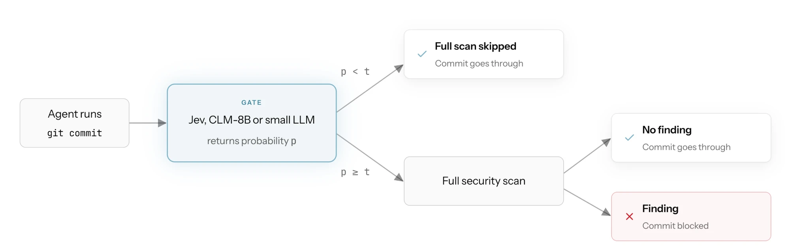
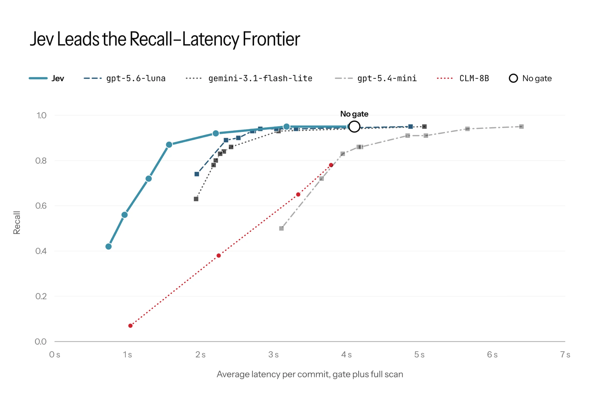
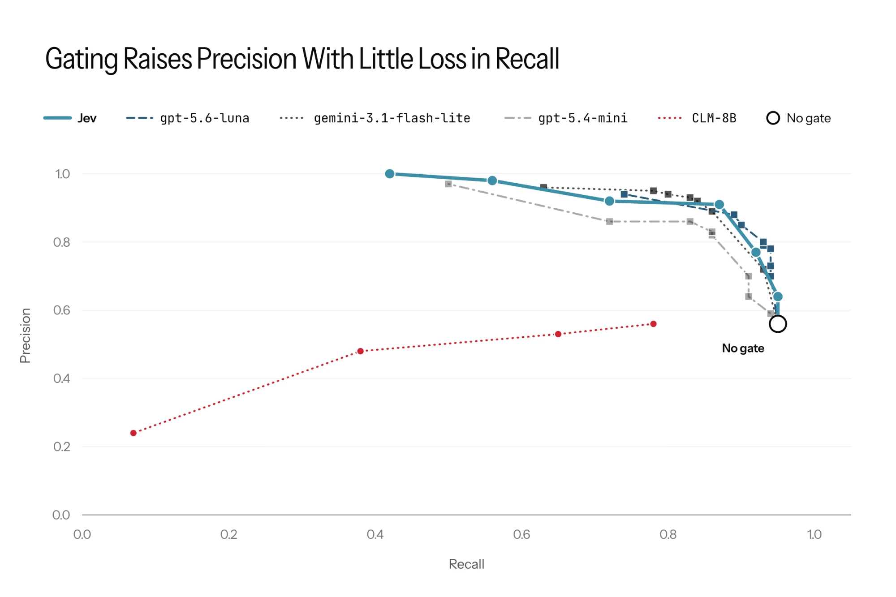
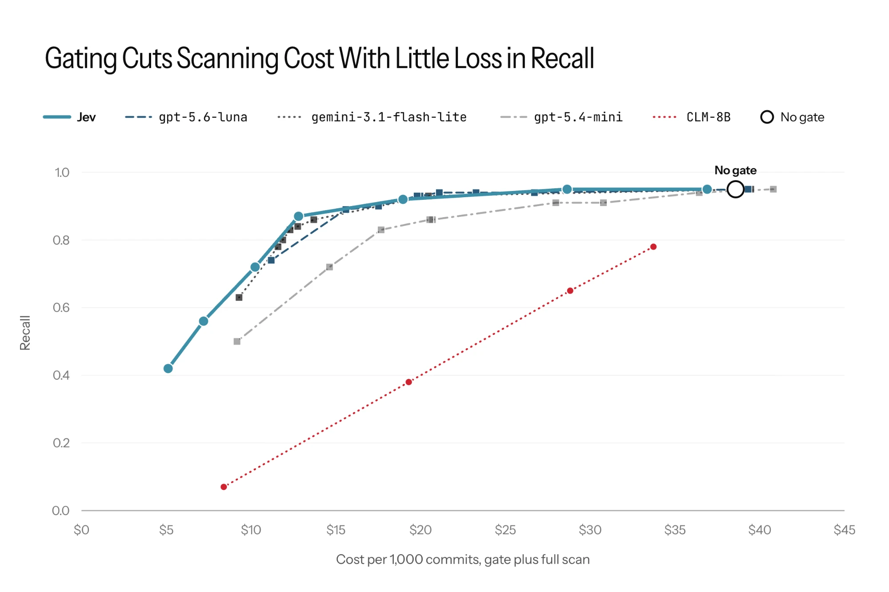

Originally published on the Corridor blog.
Coding agents now open pull requests, push commits, and merge changes across entire codebases, often in long-running sessions where reviewers barely interact. Historically, insecure code has been mitigated by human review. However, as more and more code is written by autonomous agents, human reviews are becoming the bottleneck. This inspires the use of fast and cheap automated interventions to prevent insecure code from being written and shipped.
Insecure agent-written code is introducing security threats on a scale never before seen. This year, our team worked with Transluce to expose agent swarms probing an Australian government site for vulnerabilities while fetching ordinary data [1]. During this same period, open-weight models have shown increasing cyber capabilities [2]. When agents can reliably find and exploit vulnerabilities on their own, the time between shipping vulnerable code and it being exploited is much shorter. Vulnerabilities need to be caught before code leaves the agent, not after it ships.
Corridor's security enforcement for long-running agents proactively assesses each change for vulnerabilities before an agent makes a commit. However, a thorough scan on every commit is slow and expensive, and many commits are clearly safe (such as renaming a variable or adding a comment). Therefore, we explored adding a gating layer to decide when a full scan is needed.
Scanning only what is needed
Gating borrows from dual-process thinking, where a fast, cheap System One judgment decides whether an input is worth a closer look, and the slow, deliberate System Two scan runs only when it is [3]. A gate is most useful when it can correctly skip a large share of inputs and costs little to run itself. This can also make the scan more precise, since it can help avoid false alarms.
A decision model makes a better gate than an LLM because it is trained to make decisions rather than to generate text. It takes the program state and a typed question and returns a decision with its probability in a single forward pass. That probability is trained to reflect how likely the claim is to hold, not produced as a side effect of generating text.
An LLM gate can be prompted for a confidence score, but that score is generated text, so it tends to be coarse and poorly calibrated. It is also slower to produce. Even a short score like "0.4" spans several tokens, and since an LLM generates one token per forward pass, each decision takes several passes where a decision model needs one. That adds latency and cost to every commit.
A calibrated probability also makes the gate easy to tune. We can set a threshold and adjust it to trade recall against latency, without rewriting prompts. Relative to the full scan, the gate adds little overhead when it passes a commit on and saves the whole scan when it skips one.
Compared to traditional classifiers, decision models are general classifiers as they use LLMs as their backbone. This makes them easier to integrate at many different points within Corridor, because they avoid needing to be continually retrained as input and output distributions shift. Below, we report the results of using Jev as a gate to decide when to run our security enforcement for long-running agents, which runs before every commit an agent makes.
Experimental setup
Our security enforcement gate makes one decision per commit: is the diff vulnerable? If the gate returns no (p < t), the commit is marked not vulnerable and the full scan never runs. If the gate returns yes (p ≥ t), the security enforcement scan runs, and the commit is marked vulnerable if the scan reports a security vulnerability.

In our experiments, we consider five models to use as gates, described in the table below.
| Model | Gate |
|---|---|
| Jev [4] | One Jev call scoring the claim "the code in the state contains a security vulnerability" |
| CLM-v0.1-8B [5] | One CLM call scoring the claim "the code in the state contains a security vulnerability" |
| gpt-5.6-luna [6] | Prompting for a 0–1 confidence that the diff contains a vulnerability |
| gemini-3.1-flash-lite [7] | Prompting for a 0–1 confidence that the diff contains a vulnerability |
| gpt-5.4-mini [8] | Prompting for a 0–1 confidence that the diff contains a vulnerability |
Benchmark and Metrics
We ran each security enforcement gate configuration on an internal security enforcement scan benchmark constructed using commits from open-source and synthetic sources. Ground truth labels of whether a diff contains security findings were assigned using a panel of LLM judges, chosen for their alignment with human ground truth labels. They are described in the following table:
| Model | Reasoning |
|---|---|
| gemini-3.1-pro-preview | N/A |
| gpt-6-astra | High |
| kimi-k3 | High |
We measure latency per commit as gate latency + security enforcement scan latency when the gate decides to call our security enforcement scan, or just gate latency when it skips the scan, averaged over all commits. Cost is measured as per 1,000 commits at API list price.
Results
In this section we provide three plots: recall versus latency (Figure 2), precision versus recall (Figure 3), and recall versus cost (Figure 4). In general, along the frontier, using a gate decreases latency and cost, increases precision, and minimally decreases recall. Out of the gates arms we tested, Jev lead to the lowest latency and cost, while setting the precision-recall frontier.



What we learned
Gating improves precision with minimal loss in recall. Commits the gate skips can't raise false alarms, so a well-tuned gate lifts precision far above running the full scan alone, while recall stays close to the no-gate level with a correctly tuned threshold.
Jev leads the recall–latency frontier. For any fixed recall level, a Jev gate leads to the fastest and cheapest security enforcement hook scanning process.
LLMs for gating works but decision models are better. From our results, using an LLM gate improves latency however not as much as Jev along the latency-recall frontier. This makes sense since Jev returns a probability trained for the decision, while the LLM's confidence is generated text, which may be a few tokens long depending on the model, leading to multiple forward passes.
CLM-8B doesn't work as a gate. Its scores barely separate vulnerable from safe commits, so at every threshold it did worse than simply running the full scan on everything. This is consistent with the findings of [5], which independently found that CLM is a poor verifier.
Next steps
We didn't ablate the scan. Every configuration put the same security enforcement scan model behind the gate, so we haven't measured how the results shift with a different scanner. A faster or cheaper scanner would shrink what the gate saves, and a stronger one could change which gate works best. Future work will be to see how the scanner itself impacts which gate to use.
We used CLM-8B off the shelf. Its authors report large gains from lightweight fine-tuning on downstream tasks [5], but we did not fine-tune it on security data. Its poor results here reflect the zero-shot model, not what a security-tuned CLM could do. A clear next step will be to fine-tune CLM.
Keeping checks at agent speed
As agents write and commit more of our code, every check on the commit path has to keep up. Gating lets the full scan spend its effort on the commits that need it, while the rest go through quickly. We're continuing to evaluate the automated checks in our pipeline as we increase our level of software autonomy, so subscribe to our blog for more.
References
- J. Cable, D. Chiu, F. Pernice, S. Zhang, J. Anthony, T. Bas, G. Shen, C. Stosz and J. Steinhardt, "Early rogue AI agent activity and attempts to hack found on urlquery.net," Transluce, September 2026. transluce.org/agent-activity
- A. Fasano, M. Fleischer, C. McFaul, R. Xiao and T. Gallagher, "GLM-5.3 and the spread of advanced cyber capabilities," Anthropic, September 2026. anthropic.com/research
- D. Kahneman, "Thinking, Fast and Slow," Farrar, Straus and Giroux, October 2011.
- TypeSafe AI, "Introducing System One Models & Jev," September 2026. typesafe.ai
- J. Kwok, H. Kang, T. Suresh, J. Saad-Falcon, M. Pavone, C. Ré and A. Mirhoseini, "Contrastive Language Models: A System One Model for Fast and Generalizable Decision-Making," 2026. contrastive-lm.notion.site
- OpenAI, "GPT-5.6: Frontier intelligence that scales with your ambition," July 2026. openai.com/index/gpt-5-6
- Google, "Gemini 3.1 Flash-Lite: Built for intelligence at scale," March 2026. blog.google
- OpenAI, "Introducing GPT-5.4 mini and nano," March 2026. openai.com/index/introducing-gpt-5-4-mini-and-nano